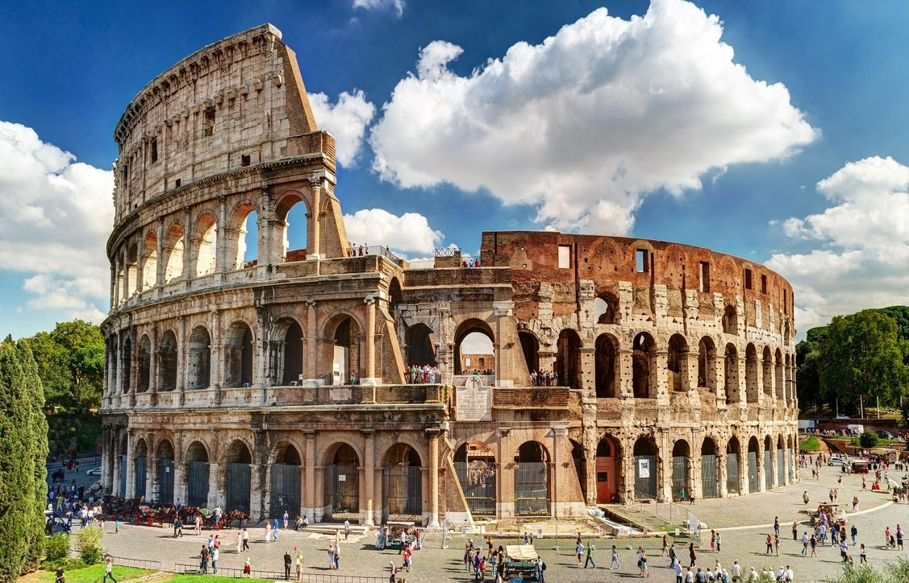

Колизей
О достопримечатеольности
Колизей (Colosseo) – самое популярное и узнаваемое сооружение Рима, столицы Италии. Это древний
амфитеатр, который датируется 70-80 годами нашей эры. В своё время это было самое престижное место для
развлечений древних римлян. Сейчас это место ежегодно принимает миллионы туристов и является визитной
карточкой Италии. Колизей был внесён в список Всемирного наследия ЮНЕСКО и строго охраняется властями.
Амфитеатр служил местом культурной жизни империи. Здесь устраивались гладиаторские поединки, травля
животных и морские бои. За всю историю Колизея здесь погибло более, чем полмиллиона людей и около
миллиона различных хищных животных. Только после 520 годов это прекратилось и амфитеатр начал терять
свою популярность.
Сейчас Колизей является ярким символом былого величия империи и примером технологичной развитости
древних цивилизаций. Колизей является довольно сложным объектом с архитектурной точки зрения. Он мог
вместить в себе более 50 тысяч зрителей благодаря сложной ярусной конструкции.
Как проехать
Самолёт. Ближайший аэропорт находится в 30 километрах от города. Это Международный аэропорт «Фьюмичино».
Там вы можете взять такси, арендовать авто или воспользоваться общественным транспортом. Из аэропорта вы
можете добраться на автобусе до центра Рима (до станции Термини (Stazione Termini)). Это займёт около
часа, и будет стоить до 5 EUR. Информацию о ценах и расписаниях, а также о наземном транспорте вы можете
узнать на сайте аэропорта.
Общественный транспорт. Дальше от станции Термини до Колизея всего 2 километра, поэтому неплохо будет
пройтись 30 минут пешком. Но, если вы не желаете идти, вы можете пересесть на метро (ветка «В») до
станции Колизея (Stazione Colosseo). Это всего 2 станции от центральной. Со станции Термини также удобно
добираться до основных районов с отелями, или, наоборот, от вашего отеля до центра города. Самыми
популярными являются центральный район (возле Колизея и станции Термини), а также Латеран (Laterano),
Венето (Veneto) и Трастевере (Trastevere). Из района Латеран вы доберётесь на метро по ветке «А» или
автобусом №51. Из Венето есть 2 варианта: на автобусе №910 до Термини, затем на метро до Колизея, или
просто автобусом (№85). Из Трастевере удобнее всего воспользоваться трамваем №3. Время в пути не займёт
более 20 минут (только от Трастевере около 30 минут). В Италии удобная система оплаты общественного
транспорта: вы покупаете билет и пользуетесь любым видом транспорта 100 минут (1.50 EUR), 24 часа (7
EUR), 48 часов (12 EUR) или же 72 часа (18 EUR).
Автомобиль. Из аэропорта «Фьюмичино» на авто вы можете добраться по трассе «А9». Из района Латерано –
через улицу Санто-Стефано-Ротондо (Via Santo Stefano Rotondo), из Венето – через улицу Квиринал (Via del
Quirinale), а из Трастевере — через авеню Трастевере (Viale di Trastevere). Тут обязательно
воспользуйтесь навигацией. Учитывайте то, что передвигаться по Риму на автомобиле крайне неудобно и
стрессово. Водители на дорогах агрессивны, а движение очень массовое и хаотичное. Есть также зоны, где
движение ограничено. Парковочные места у дороги отсутствуют. Так как все достопримечательности находятся
недалеко друг от друга, лучше всего оставить автомобиль на парковке и исследовать город пешком или
воспользоваться общественным транспортом. Оставьте авто на парковке у своего отеля, или воспользуйтесь
услугами больших парковок «Parcheggio Borghese», «Parcheggio di Scambio». Цена за парковку начинается от
2 EUR в час. На сайтах парковок вы можете узнать больше.
Иван Иванов
Отличный сайт, очень полезная информация, пользуюсь каждый день.